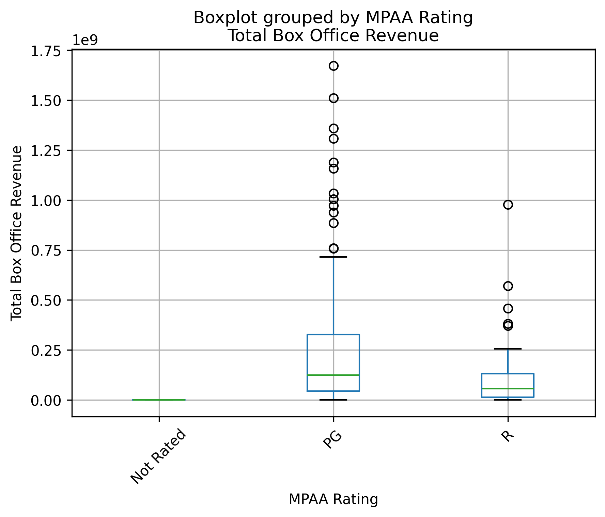
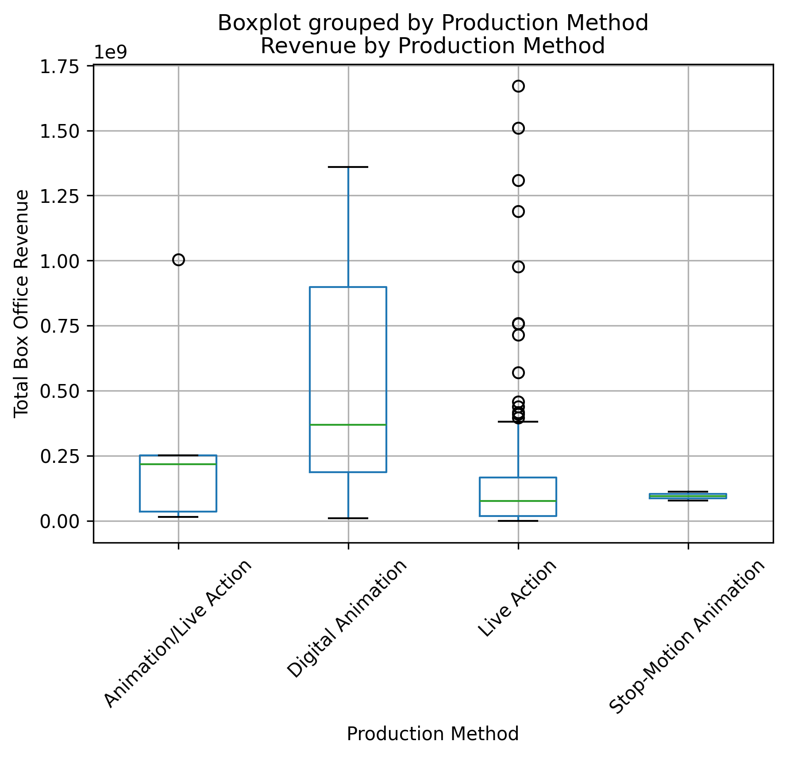
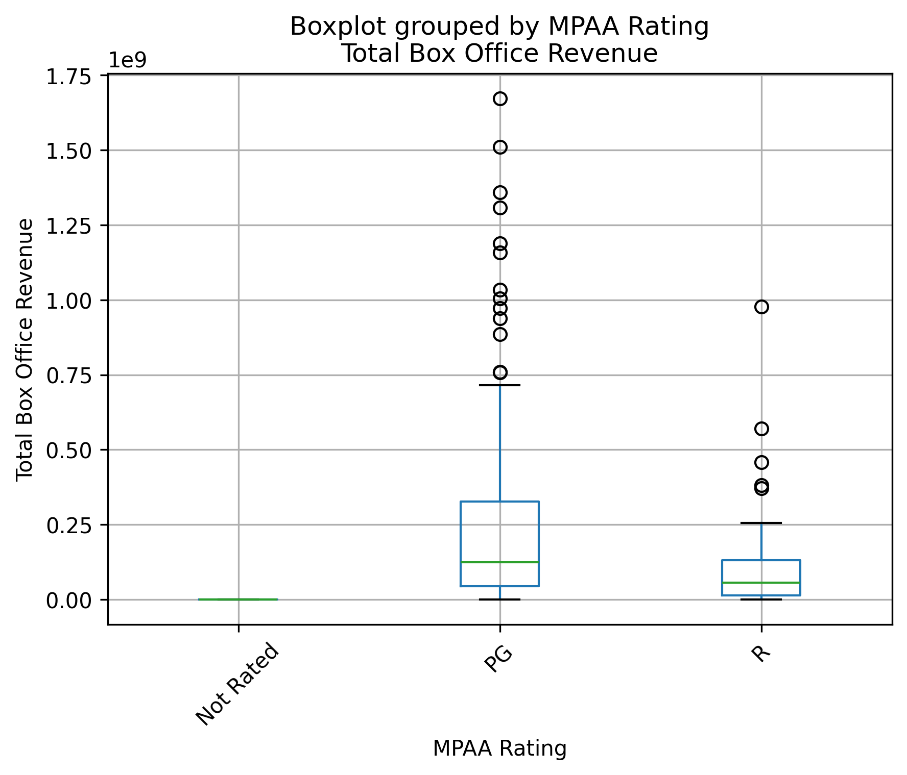
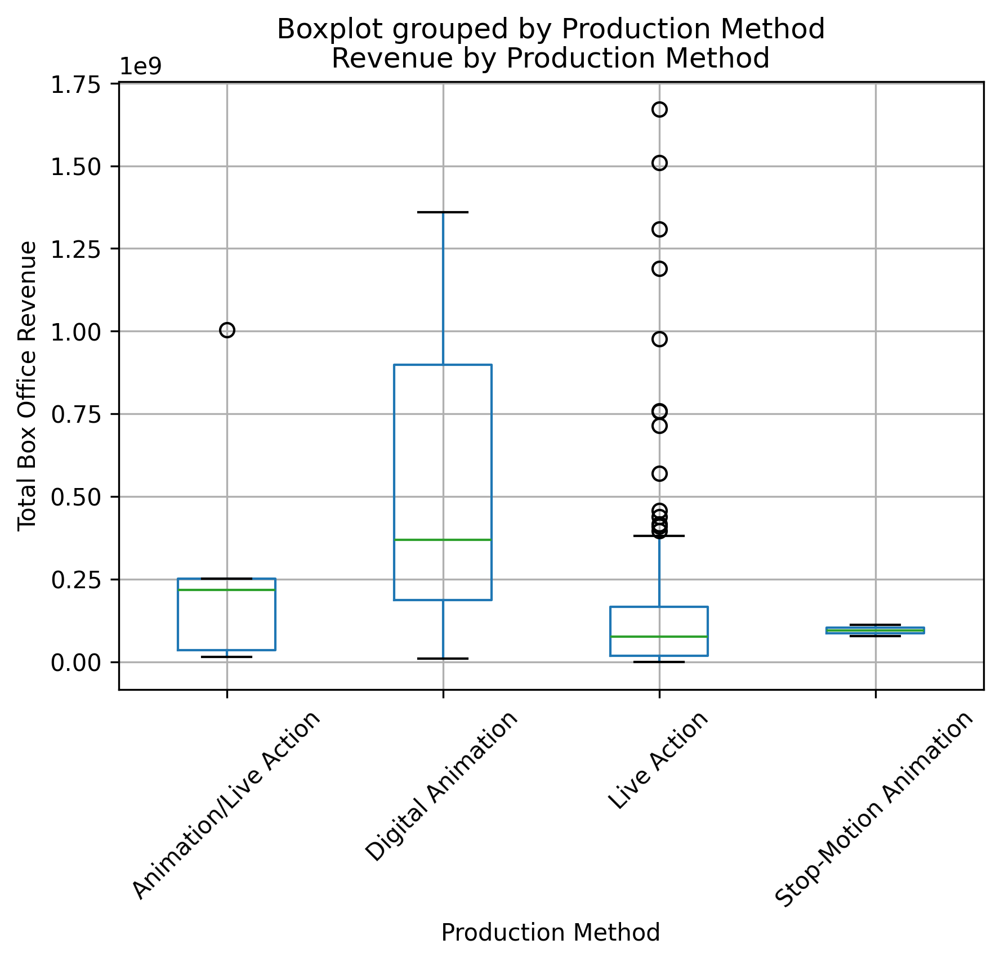

Technical Report
Executive Summary
Project Objectives: Identify the highest revenue movies by finding what features determine high grossing movies. In other words, how would I make a movie, and when would I release it in order to return the highest amount of revenue?
Key Findings: None of the analyses done show anything statistically significant results when put in reference to the questions, though there are some small differences in movie revenue depending on various factors, (such as Season and Genre), these factors are not mentioned specifically since they are statistically irrelevant.
Actionable Recommendations: Because there are no significant factors, more analysis is highly advised to reduce uncertainty. We suggest separating data (such as into season, movie type, etc) for a deeper analysis, which likely reduce the variation. Additionally, analysis identifying the high earning revenue movies and finding what they have in common could be used to see what influences revenue. The analysis did not show any statistically significant data, but some actions that might indicate a high revenue movie is a movie that appeals to everyone, is released in the summer, and has a high starting budget. Making a PG movie using Digital Animation in the genre of Adventure or Action, which appeals to those inside and outside the US, is anticipated to result in higher overall revenue.
Project Context
Motivation: We want to know what movies have the highest revenue and see what could help maximize the revenue of a movie. Please note that this is with the belief that revenue for movies is an indicator of how good a movie is.
Success Criteria: Identify distinct features that are important for and impact overall movie revenue.
Stakeholders: This project has two interested parties. One is individuals who want to enjoy a good movie and do not want to pay for low quality entertainment, and the second is companies, (Business/Board of Trustees/Boss), who want to maximize the amount of revenue they earn when creating a movie.
Data Sources
- Primary dataset:
- Universal Movies from 2020-2029 and Universal Movies from 2010-2019
- Financial Data for movies: The Numbers
- Supplementary data: These were the only sites/sources used
- Data access notes: Wait five seconds between requests, all information is open access with no licenses needed.
Methodology
Data acquisition: Used common web scraping techniques to obtain data from Wikipedia and The Numbers using the libraries: requests, beautiful soup, regex, and pandas. Specifically, our function
data_creationuses the init function for both requests and beautiful soup,read_htmlfrom pandas,sub,matchfrom regex,getfrom requests, andfindfrom beautiful soup.Cleaning pipeline:
- Changed Release Date into a datetime object.
- Changed all revenue numbers from strings containing $ to proper integers.
- Changed runtime from a string to an integer
- Changed all None values to np.Nan
- Removed all extraneous information, specifically
- Who released the movie and what type of release it was (for both video and theater release date)
- Percentage of total gross for opening weekend
- Production budget as related to worldwide box office
- MPAA Rating specifics
- Created a profits column by taking Total Box Office Revenue - Budget
- Also created a Year, Month, and Season column based upon release date
- This was validated by checking that all columns were of specified types and manually viewing the dataset, and all was as expected
- A separated csv was created for Machine Learning Analysis wherein the target, Total Box Office Revenue, was analyzed as a log of the original target due to the skewness of the target data, this separate csv,
ml_movie_data.csv, also removes all non-numeric columns. ml_movie_data.csvis the transformed version ofmovie_data.csv- This was validated by checking the new transformed column and csv as a whole.
- Analysis workflow:
- Correlate all the data to see what has an effect on income
- Find the NAs for reference
- Plot the money against one another to check for anomalies
- Find the average revenue for each year and then plot it for clearer visuals
- Find the statistics for some of the means
- Plot the categorical data with regards to the Inflation Adjusted Domestic Revenue
“We used some basic analysis such as correlation, plots to visualize it (mostly line plots but some box plots for categorical data). This required only a few changes such as adding a column for year or doing basic math, mostly wit dates, to get usable numbers for plots and correlation. There are some NAs in the data set, around 60 to 70 for each column. The highest one was 146 but that was Franchise which wasn’t really used in any analysis”
- Tooling:
- Packages: The packages used were:
- bs4
- ipykernel
- lxml
- matplotlib
- numpy
- pandas
- requests
- scikit-learn
- shap
- Environments: The virtual environment UV was used for this project with Python 3.13.
- Reproducibility Steps: Run
totality()to reproduce our dataset, results, and interpretation, for more details see the tutorial
Results & Diagnostics
Main Metrics:
The main metrics for the plots and data of importance are as follows:
Total Box Office Revenue:
mean = 1.9 e^8 (190 million US dollars)
sd = 3.0 e^8 (300 million US dollars)
median = 8.37 e^7 (83 million US dollars)
Season of Release:
Fall: mean = 1.14 e^8 (114 million US dollars),
sd = 1.47 e^8 (147 million US dollars)
median = 7.73 e^7 (77 million US dollars)
Spring: mean = 2.24 e^8 (224 million US dollars),
sd = 3.96 e^8 (396 million US dollars)
median = 6.44 e^7 (64 million US dollars)
Summer: mean = 3.19 e^8 (319 million US dollars),
sd = 4.20 e^8 (420 million US dollars)
median = 1.37 e^8 (137 million US dollars)
Winter: mean = 1.52 e^8 (152 million US dollars),
sd = 1.58 e^8 (158 million US dollars)
median = 9.62 e^7 (96 million US dollars)
Genre:
The highest means are in 'Musicals', 'Action', 'Adventure' with means, sd, and median of:
Action: mean = 5.36 e^8 (536 million US dollars),
sd = 5.13 e^8 (513 million US dollars)
median = 3.34 e^8 (334 million US dollars)
Adventure: mean = 4.41 e^8 (441 million US dollars),
sd = 4.26 e^8 (426 million US dollars)
median = 2.52 e^8 (252 million US dollars)
Musical: mean = 3.17 e^8 (317 million US dollars),
sd = 3.14 e^8 (314 million US dollars)
median = 3.96 e^8 (396 million US dollars)
Movie Rating:
PG: mean = 2.84 e^8 (284 million US dollars),
sd = 3.70 e^8 (370 million US dollars)
median = 1.25 e^8 (125 million US dollars)
R: mean = 9.67 e^7 (97 million US dollars),
sd = 1.42 e^8 (142 million US dollars)
median = 5.60 e^7 (56 million US dollars)
Production Method:
Animation/Live Action: mean = 3.05 e^8 (305 million US dollars),
sd = 4.05 e^8 (405 million US dollars)
median = 2.17 e^8 (217 million US dollars)
Digital Animation: mean = 4.98 e^8 (498 million US dollars),
sd = 4.22 e^8 (422 million US dollars)
median = 3.70 e^8 (370 million US dollars)
Live Action: mean = 1.54 e^8 (154 million US dollars)
sd = 2.59 e^8 (259 million US dollars)
median = 7.70 e^7 (77 million US dollars)
Stop-Motion Animation: mean = 9.47 e^7 (95 million US dollars)
sd = 2.43 e^7 (24 million US dollars)
median = 9.47 e^7 (95 million US dollars)Statistical Significance of the following features:
Season (Relation to Total Box Office Revenue)
Overall F-value = 4.81
Overall p-value = 0.0030
Significance Between Groups:
Fall vs Spring: p = 0.4247
Fall vs Summer: p = 0.0120
Fall vs Winter: p = 0.5921
Spring vs Summer: p = 0.7339
Spring vs Winter: p = 0.7562
Summer vs Winter: p = 0.0636
Genre (Relation to Total Box Office Revenue)
Overall F = 7.77
Overall p = 2.93e-10
Significance Between Groups:
Action vs Adventure: p = 0.9999
Action vs Musical: p = 0.9470
Adventure vs Musical: p = 0.998173
Movie Rating (Relation to Total Box Office Revenue)
Overall F = 9.78
Overall p = 0.000093
Significance Between Groups:
Not Rated vs PG: p = NaN
Not Rated vs R: p = NaN
PG vs R: p = 0.000024
Production Method (Relation to Total Box Office Revenue)
Overall F = 9.03
Overall p = 0.000013
Significance Between Groups:
Animation/Live Action vs Digital Animation: p = 0.7827
Animation/Live Action vs Live Action: p = 0.8409
Animation/Live Action vs Stop-Motion: p = 0.6803
Digital Animation vs Live Action: p = 0.0093
Digital Animation vs Stop-Motion: p = 0.0023
Live Action vs Stop-Motion: p = 0.2194Charts: The following graph shows the differences in revenue and their correlation, (and why international matters to total so much). 
The following charts show the median and other ranges regarding the values described above and how they compare to each other: 
  
 
Model Diagnostics: We chose not to create a prediction model because no statistically significant variables were identified, and thus have no model diagnostics.
Discussion & Next Steps
Results: There were no statistically significant variables because the variance was so high. There are some factors that appear to have some influence such as season of release, genre, and rating (R, PG, G) but further analysis could reveal more influence if variance was reduced.
Limitations: The categorical and numerical analysis for correlation can’t show causation so we don’t know if adjusting one will directly influence the other. Additionally, none of the results shown significance, this means that the variance of revenue in any of our analyses is not different form the average mean.
Open Questions: 1. If you separate things further (year of production, season of production, genre, etc.) dose it tell a clearer story about the data? 2. Are movie ratings related to the revenue earned for that movie? 3. Are there other factors that influence revenue? (storyline, plot twists, etc) 4. Do outliers (very high or very low revenue movies) have common factors?
Future Experiments: In order to reduce the amount of variance it would be smart to separate data more, an example might be only action movies in winter compared to adventure movies in winter. This would hopefully reduce the variance and create a more accurate analysis as well as show any influence between variables, for example if R movies earning less revenue because most of them were released in winter, then an analysis of movie ratings for these movies would be informative as to what watchers value and therefore what you could charge more for.